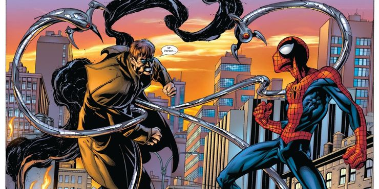
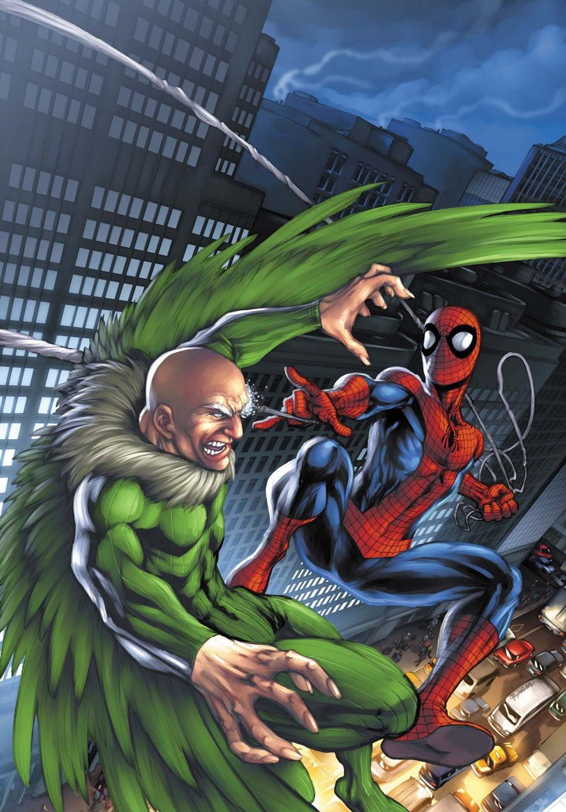
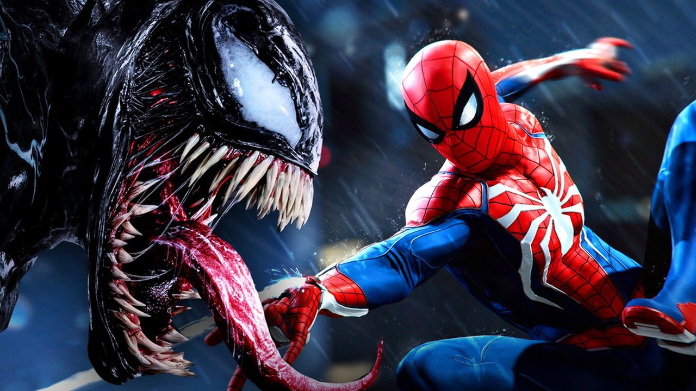

Otto Octavius had a turbulent upbringing. His father, a factory worker, was abusive and violent towards both Otto and his mother, leading Otto to be shy and reclusive in school. However, at his mother's insistence, he was determined not to become like his father and threw all his efforts into his education, regularly scoring top marks. It was hinted that he was a low-level telepathic mutant whose powers emerged at puberty; this mutation may have been responsible for giving his father an aneurysm as his father went to beat him. His father's death in an industrial accident pushed Otto further towards the study of, and obsession with, physical science.
Adrian toomes is a wealthy businessman who has researched and come up with flying armour technology and wanted to make lives of prople easier but after getting betrayed by his fellow businessmen he used th armour to become the villian known as "the vulture." He's become an arch nemesis of spiderman and on occasions has also worked for and with kingpin to take spiderman dwon. there have been many who took on the mantle of "vulture" but the cunnningness of the original remains unparalleled. as a side benefit he became a staple for the portfolio of spiderman hence, good for business. 
THe venom is an alien symbiote who requires a host to survive on planets other than his own. he came to earth when it was retrived by astronaut john jameson when on a space mission. when it attches to a host, it enhances every trait of the host whether good or bad. it found and attached itself to spiderman for a breif amount of time and enhanced his powers. it also acquires knowledge about it's hosts hence knows the secret identity of spiderman. it also retains the abilities af spiderman to climb walls and has it's own webbing. spiderman has fought and defeated venom and other symbiotes on several occasions. Back to top
